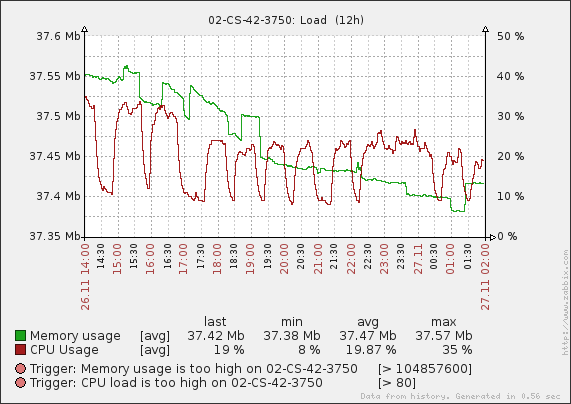
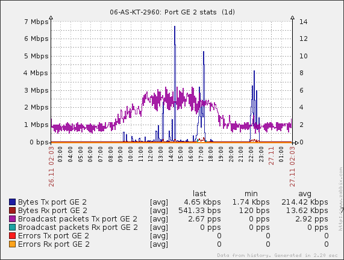
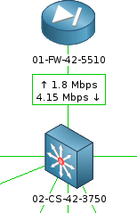
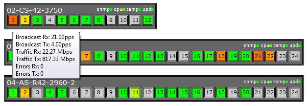

Мониторинг — это один из столпов обеспечения высокой доступности ИТ-систем.
Как правило, системные администраторы при установке системы мониторинга в первую очередь настраивают ее на проверку параметров серверов и обнаружение недоступности сервисов, запущенных на этих серверах. Безусловно это приоритетная задача, но не стоит забывать и о другом оборудовании: ИБП, системах кондиционирования, сетевом оборудовании.
В этом топике я покажу как решить за полчаса задачу мониторинга активного сетевого оборудования (т.е. свитчей, роутеров и т.п.) в системе Zabbix с помощью пары полезных инструментов. В результате вы сможете получить полную картину происходящего в сети.
Включаем мониторинг
Думаю, я не ошибусь, если скажу, что большинству системных администраторов приходится работать с унаследованным «зоопарком» оборудования различных моделей и вендоров. К счастью, большинство моделей поддерживает открытый протокол SNMP. Именно по нему мы и будем получать информацию о состоянии сетевых интерфейсов.
Предположим, что Zabbix у вас уже установлен. Чтобы воспользоваться SNMP нужно:
С учетом того, что у каждого сетевого порта может быть несколько отслеживаемых параметров, у типичного свитча — 24, а то и 48 портов, а свитчей в сети могут быть десятки, ручная конфигурация чересчур трудоемка.
Для облегчения задачи необходимо использовать шаблоны (templates). Шаблон содержит в себе все необходимые item'ы, триггеры и графики — остается только завести хост и подключить к нему шаблон.
Для Zabbix уже есть много готовых шаблонов, которые можно или нагуглить или посмотреть в мануале.
Если вы не нашли нужный шаблон, не расстраивайтесь: как правило, производители используют стандартные OID'ы из RFC1213 и RFC2233:
|
sysName.0 |
имя узла |
|
|
.1.3.6.1.2.1.1.3.0 |
uptime |
|
|
.1.3.6.1.2.1.2.2.1.8.X |
статус порта: 1(up) / 2(down) |
X — номер порта; |
|
.1.3.6.1.2.1.2.2.1.16.X |
отправлено байт | |
|
.1.3.6.1.2.1.2.2.1.10.X |
принято байт | |
|
.1.3.6.1.2.1.31.1.1.1.5.X |
отправлено broadcast пакетов | |
|
.1.3.6.1.2.1.31.1.1.1.3.X |
принято broadcast пакетов | |
|
.1.3.6.1.2.1.31.1.1.1.4.X |
отправлено multicast пакетов | |
|
.1.3.6.1.2.1.31.1.1.1.2.X |
принято multicast пакетов | |
|
.1.3.6.1.2.1.2.2.1.17.X |
отправлено unicast пакетов | |
|
.1.3.6.1.2.1.2.2.1.11.X |
принято unicast пакетов | |
|
.1.3.6.1.2.1.2.2.1.20.X |
ошибок при отправке | |
|
.1.3.6.1.2.1.2.2.1.14.X |
ошибок при получении |
Помимо этого можно считать имя интерфейса, MTU, скорость и другие параметры. Полный список смотрите на сайте Cisco.
Cisco Catalyst, как правило, поддерживают дополнительно:
.1.3.6.1.4.1.9.9.109.1.1.1.1.5.1 — процент загрузки CPU
.1.3.6.1.4.1.9.9.48.1.1.1.5.1 — занятая память (в байтах)
.1.3.6.1.4.1.9.5.1.2.13.0 — статус температуры (1 — нормальная, 2 — повышенная, 3 — критическая)
Генератор шаблонов
Заметив, то что идентификаторы стандартизованы, я написал простенький скрипт на PHP, который позволяет сгенерировать XML-шаблон для Zabbix с нужными OID для всех портов. Мы протестировали его на оборудовании Cisco (500G, 2960. 3550 и 3750), 3Com (2426, 2924, 2948), паре D-Link и Zyxel 4012. (Кто хочет, может скачать исходники).
Генератор создает шаблоны, которые умеют:
После того, как вы сгенерировали и сохранили шаблон для устройства, сымпортируйте его: перейдите в Configuration → Templates и нажмите справа вверху кнопку Import. Создайте новый Host или отредактируйте существующий — привяжите к нему ваш шаблон.
Если вы хотите изменить какие-либо параметры (например, SNMP community), то это можно сделать прямо в Zabbix: зайдите в шаблон в Configuration → Templates , в Items выделите нужные элементы галочками и внизу выберите из выпадающего списка Mass update


Отладка
Если прошло несколько минут после добавления к устройству шаблона, а данные от SNMP так и не появились, необходимо проверить, может ли сервер Zabbix считать данные с устройства. Делается это утилитой snmpget:
snmpget -v версия_протокола -c комьюнити адрес_устройства OID
Например, получим число отправленных байт на первом гигабитном порту для Cisco:
snmpget -v 2c -c qwerty 192.168.1.1 .1.3.6.1.2.1.2.2.1.16.10101
IF-MIB::ifOutOctets.10101 = Counter32: 2044250092
Для не-Cisco железки:
snmpget -v 2c -c qwerty 192.168.1.2 .1.3.6.1.2.1.2.2.1.16.1
IF-MIB::ifOutOctets.1 = Counter32: 1691279168
Если вы получаете сообщение Timeout: No Response from ..., значит вам нужно убедиться, что SNMP включен на устройстве и серверу разрешено соединяться с портом 161/UDP коммутатора.
Сообщение No Such Object available on this agent at this OID говорит о том, что запрашиваемый параметр не поддерживается.
Чтобы прочитать полный список параметров с устройства выполните:
snmpwalk -v версия_протокола -c комьюнити адрес_устройства
Любители GUI для чтения SNMP-данных с устройства могут воспользоваться программами типа MIB Browser.
Карта сети
Карту придется кропотливо составлять вручную. Тут надо знать пару трюков. Чтобы над соединительными линиями между оборудованием показывать скорость, добавьте в подпись вызов соответствующего item в фигурных скобках. Например:
↑ {02-CS-42-3750:ifOutOctets.10112.last(0)}
{02-CS-42-3750:ifInOctets.10112.last(0)} ↓
Запись 02-CS-42-3750:ifOutOctets.10112.last(0) означает получить у хоста 02-CS-42-3750 последнее по времени значение параметра ifOutOctets (отправлено байт). ↑ и ↓ это просто коды стрелочек ↑ и ↓ для красоты.

Также в свойствах Link вы можете настроить отображении линии красным в случае падения порта в down.
Мониторинг состояния портов
К сожалению, в Zabbix нет удобного инструмента для просмотра состояния отдельных портов устройств, поэтому его пришлось написать. Информация импортируется из Zabbix и выводится администратору в удобном виде:

Серый цвет порта обозначает, то что он находится в down. Цвет от зеленого до красного меняется в зависимости от загрузки порта. Гигабитные порты выделены рамочкой.
Минус скрипта в том, что он писался «для себя», поэтому установка достаточно корявая (-:. Скачайте исходники и прочитайте readme.
Производительность
Нельзя не упомянуть о возможной проблеме с производительностью zabbix-сервера. Предположим, что вы раз в минуту получаете информацию об 11 параметрах каждого порта 50-ти 24-портовых свитчей. На базу данных zabbix-сервера ляжет нагрузка в среднем 220 записей в секунду. Для слабой машины она может оказаться непосильной. Поэтому рекомендуется ограничивать количество item'ов или увеличивать интервал проверки. Мы считаем достаточным запрашивать статус порта, трафик, количество ошибок и широковещательных пакетов раз в 60 секунд.
Планы
В следующей версии генератора шаблонов хотелось бы добавить возможность получения остальных параметров интерфейсов, выбор цветов линий для графиков, возможность указания скорости портов для не-Cisco устройств. Предложения приветствуются.
Выражаю благодарность Бугаенко Владиславу за помощь в создании и тестирования скриптов.